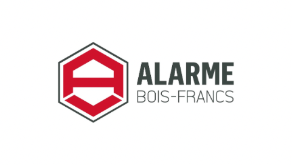

Demandes de réparation
Photos et vidéos, suivi en temps réel et évaluation du technicien.
Un logiciel de gestion immobilière et une application pour résidents : demandes, réservations, documents, interphone et portes au même endroit.

Unitly est une plateforme pour les immeubles résidentiels : une application pour résidents à votre image, un logiciel de gestion immobilière pour les gestionnaires et les propriétaires, et un interphone intelligent, tout en un.
Demandes, réservations, documents et nouvelles de l’immeuble dans une seule application.
The Office : résidents, demandes, tâches, prestataires et rapports.
Les appels de la platine d’entrée arrivent sur le téléphone ; la porte s’ouvre depuis l’application.
Services à domicile, stationnement visiteurs, messages, notifications et offres de partenaires.
Photos et vidéos, suivi en temps réel et évaluation du technicien.
Créez un accès visiteur et réservez une place en quelques gestes. Retrouvez vos véhicules dans votre profil.
Réservez les espaces communs et l’ascenseur pour un déménagement.
Règlement de l’immeuble, assurance et renouvellement du bail en ligne.
Déneigement, collecte des déchets, courrier et rappels.
Avec photos et vidéos, y compris de manière anonyme.
Commandez un ménage, un pressing, un lavage de voiture ou un nettoyage de meubles sans quitter votre domicile.
Posez une question sur une demande et recevez la réponse de l’équipe de l’immeuble dans l’application.
Suivez vos demandes et les nouvelles de l’immeuble au même endroit.
Demandes, résidents, paiements, tâches, rapports et journal d’activité au même endroit.
Planifiez les visites dans un calendrier, confiez les demandes aux prestataires et suivez leur charge de travail.
Les résidents paient sur leur téléphone ; le gestionnaire suit le statut des paiements.
Contrôlez la température, l’éclairage et les autres appareils de votre logement depuis l’application.
Envoyez des messages promotionnels aux résidents via l’application. Vous gagnez grâce à la publicité, les commerces locaux touchent de nouveaux clients et les résidents profitent d’offres utiles.
Vendez de la publicité aux commerces locaux et envoyez-la à vos résidents.
Profitez d’offres avantageuses de partenaires près de chez vous.
Le visiteur appelle depuis la platine d’entrée. Les résidents reçoivent l’appel sur leur téléphone et ouvrent la porte depuis l’application.
Il choisit votre logement sur la platine d’entrée.
Sur votre téléphone, avec la photo du visiteur lorsque la platine en envoie une.
Depuis l’application, pendant que l’appel sonne.
Seuls les résidents du logement appelé voient l’appel et peuvent ouvrir la porte.
Installez un interphone intelligent Leaf avec reconnaissance faciale. La vidéo de la porte arrive directement dans l’application Unitly.
Choisir un interphone →︎Choisissez le modèle, saisissez l’adresse de la platine et vérifiez qu’elle répond.
Voyez si chaque platine est en ligne et consultez le journal des badges, ouvertures et alarmes.
Ouvrez la porte depuis The Office. Chaque ouverture est inscrite dans le journal d’activité.
Les résidents n’ont pas à installer séparément un interphone, une messagerie, un portail et un service de paiement.
Paiements, demandes, interphone et portes fonctionnent dans un même système.
Votre nom, votre couleur et votre logo.
Vos données sont séparées de celles des autres clients.
Français, anglais, ukrainien, espagnol, russe et chinois pour vos résidents.
Importez les résidents depuis Excel et envoyez les invitations automatiquement.
Authentification à deux facteurs, journal d’activité et sauvegardes.
Les deux formats sont personnalisés pour le client : le site Web et l’application mobile portent le nom et la marque du propriétaire, avec une interface et un design sur mesure.
Un site Web à votre nom et à votre marque, avec une interface sur mesure, accessible par navigateur.
Une application mobile à votre nom et à votre marque, avec une interface sur mesure.
Essayez la démo interactive : explorez les rubriques, les services et les demandes. Les données sont fictives. Les deux formats sont personnalisés à votre marque.
| Comparaison | Version Web | Application mobile |
|---|---|---|
| Nom et marque | Le nom et la marque du propriétaire. | Le nom et la marque du propriétaire. |
| Accès | Ouvrez votre site Web à votre marque dans un navigateur. | Une application distincte publiée sous votre marque. |
| Interface et design | Une interface et un design adaptés à l’identité visuelle du client. | Une interface et un design adaptés à l’identité visuelle du client. |
| Pour quels besoins | Aux propriétaires qui souhaitent un accès par navigateur sans publier une application distincte. | Aux propriétaires qui souhaitent proposer un accès au service par application mobile. |
Essayez la démo administrateur : explorez les demandes, les résidents, les bâtiments et les messages avec des données fictives.
Votre nom, votre logo, vos couleurs et le design de l’interface font de l’application une partie intégrante du service de votre immeuble.
Un style cohérent aide les résidents à reconnaître le service de leur immeuble ou de leur gestionnaire.
Nous discutons de votre charte graphique, de vos préférences d’interface et des besoins des résidents pour définir la personnalisation.
Des gestionnaires qui gèrent déjà leurs immeubles avec Unitly.
Une entreprise de gestion immobilière au Canada. Ses résidents utilisent désormais Unitly.
pivert.caLe partenaire qui apporte Unitly au Québec.

Distributeur et installateur au Québec
237 boul. Bois-Francs Sud,Unitly est un logiciel de gestion immobilière avec une application pour résidents. Les résidents envoient des demandes d’entretien, réservent les espaces communs, lisent les nouvelles de l’immeuble et ouvrent la porte depuis leur téléphone ; les gestionnaires gèrent tout dans le tableau de bord The Office.
Aux complexes résidentiels, aux entreprises de gestion immobilière et aux propriétaires.
Oui. Le site web et l’application mobile portent le nom et la marque du propriétaire, avec une interface conçue pour vous.
Oui. Le visiteur appelle depuis la platine d’entrée, les résidents reçoivent l’appel sur leur téléphone et ouvrent la porte depuis l’application. Vous pouvez aussi installer un interphone intelligent Leaf à reconnaissance faciale.
Nous connectons des immeubles au Canada. Au Québec, Unitly est aussi offert par notre distributeur Alarme Bois-Francs.
Une seule application pour les tâches quotidiennes liées à votre logement. Discutez de sa mise en place avec notre équipe.
Contacter notre équipe ↗︎